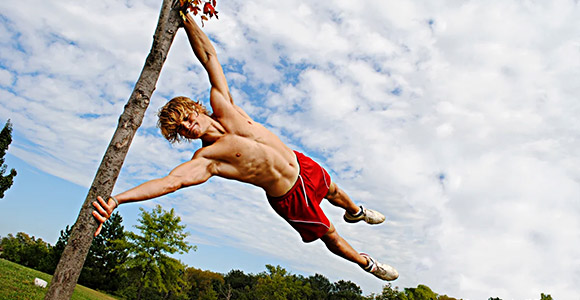
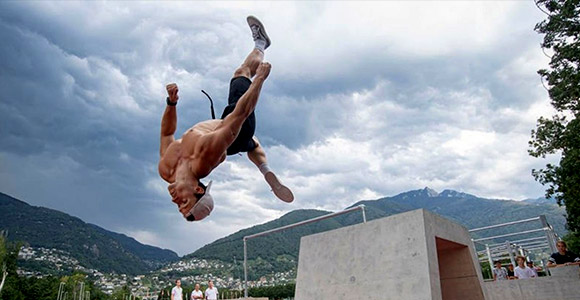

Какво е Parkour?
Спорт, в който практикуващите (наречени трейсъри) се опитват да стигнат от една точка до друга по възможно най-бързия и ефективен начин,
без помощно оборудване и често докато изпълняват акробатични умения.
С корени във военно обучение по препятствия и бойни изкуства, паркурът включва обръщане, бягане, катерене, люлеене, скок, скачане, плиометрия и т.н.
Паркур е дейност, която може да се практикува самостоятелно или с други и обикновено се извършва в градски пространства, въпреки че може да се прави навсякъде.
|
 |
|  |
История
Практиките на подобни движения са съществували в различни общности по света в продължение на векове преди основаването на паркур движение, което е повлияно от тези по-ранни традиции.
Такива атлетически традиции са съществували сред различни местни народи в Африка от векове. Подобна дисциплина в китайската култура е qinggong,
китайска техника за обучение по бойни изкуства, която също датира от векове.
В Западна Европа предшественик на паркур е разработен от френския военноморски офицер Жорж Ебер,
който преди Първата световна война насърчава атлетичните умения, базирани на моделите на местни племена, които е срещнал в Африка.
|